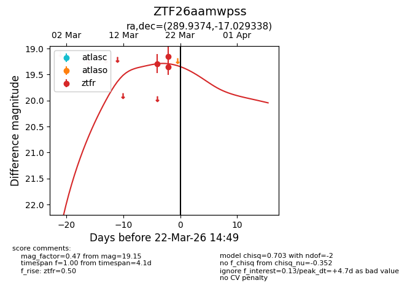
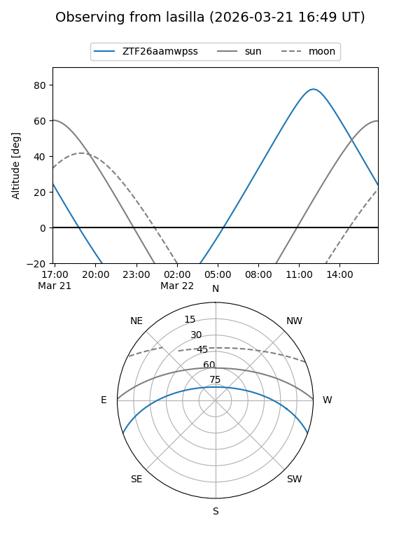
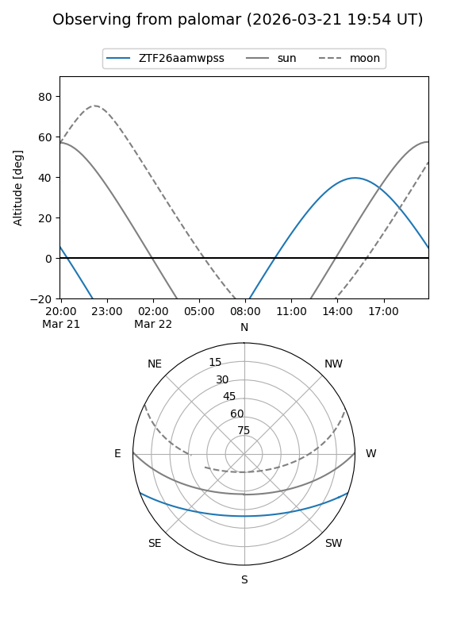
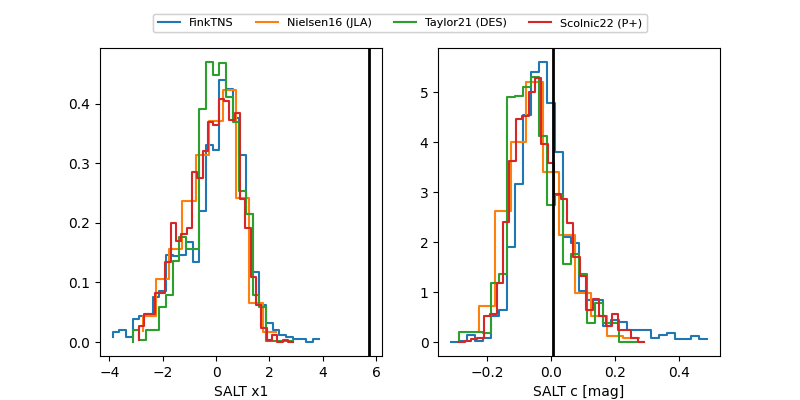

ZTF26aamwpss
Target ZTF26aamwpss at 2026-03-22 14:51
Aliases and brokers:
FINK: link
Lasair: link
ALeRCE: link
alt names
ZTF26aamwpss (ztf,fink_ztf)
Coordinates:
equatorial (ra, dec) = 289.9374,-17.02934
equatorial (HMS+DMS) = 19:19:44.97,-17:01:45.62
galactic (l, b) = (20.6300,-13.79184)
Flags:
Photometry:
last ztfr=19.15
3 ztfr detections
Lightcurve

Visibility


Additional plots
